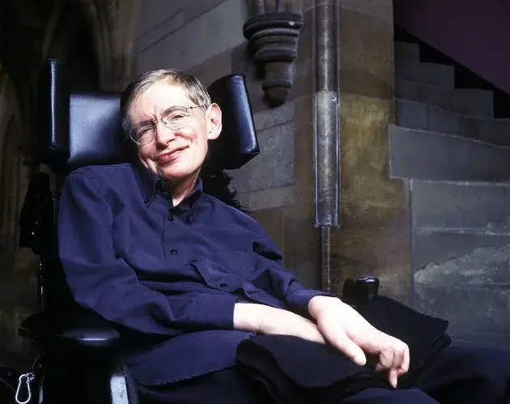
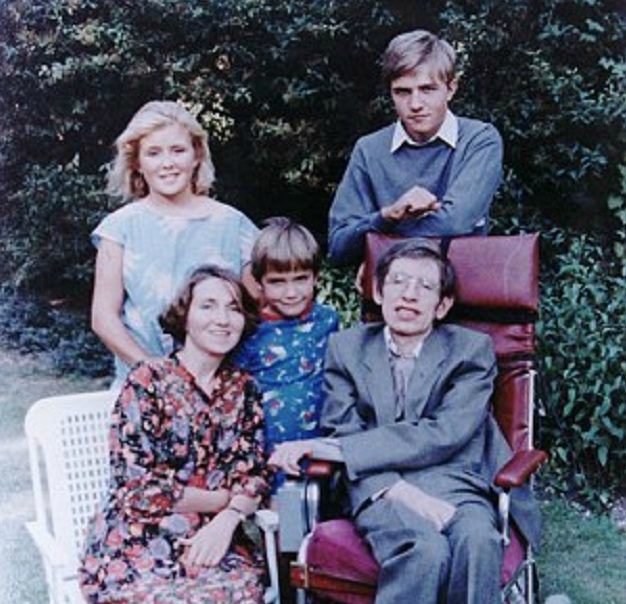
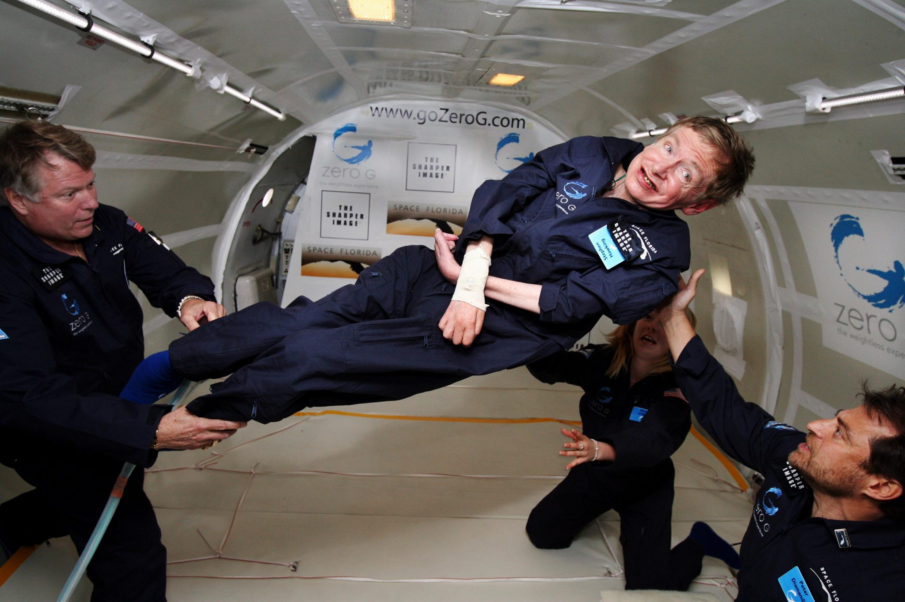

Quem foi Stephen Hawking?
Stephen Hawking (1942-2018) foi um cientista, professor e autor de diversos livros sobre Cosmologia. Seus estudos sobre buracos negros lhe renderam notoriedade e reconhecimento.
Contribuiu significativamente para a ampliação do conhecimento da criação, evolução e estrutura atual do universo. Além de suas pesquisas, a publicação de livros sobre
ciências com uma linguagem mais acessível para o grande público, tornaram-no o astrofísico mais conhecido atualmente.

Biografia
Stephen Hawking nasceu em 8 de janeiro de 1942 em Oxford, Inglaterra, em meio a segunda guerra mundial. Filho de Frank e Isobel Hawking, era o mais velho dos quatro filhos do casal.
No início da sua vida acadêmica era considerado um bom aluno, mas nada de excepcional.
Seu pai, que era médico, queria que seu filho mais velho estudasse medicina. No entanto, Hawking desde cedo apresentava aptidão para as ciências. Aos 17 anos foi admitido na Universidade de Oxford para estudar Ciências Naturais
com ênfase em Física, se formando em 1962.
No mesmo ano foi fazer doutorado em Cosmologia na Universidade de Cambridge. Lá conheceu Jane Wilde, com quem se casou 2 anos mais tarde. Em 1963, foi diagnosticado com esclerose lateral amiotrófica (ELA).
Ao terminar o doutorado, passou a ser pesquisador e mais tarde se tornou professor em Cambridge. Iniciou seus estudos em singularidades e buracos negros. Deixou o Instituto de Astronomia, em 1973.
Em 1979 entrou para o Departamento de Matemática Aplicada e Física Teórica. Ocupou a cátedra de professor Lucasiano em Matemática, também ocupada por Isaac Newton. Permanecendo até 2009.
O artigo "Black Hole Explosion" (explosão do buraco negro) é publicado em 1974. Onde apresenta a teoria que o proporcionou notoriedade. Publica a teoria da ausência de fronteiras, em 1982, que descreve como o universo pode ter surgido do nada.
Em 1985 tem uma pneumonia e quase morre. Passa por uma traqueostomia, que o impede de falar de forma natural.
O livro "Uma breve história do tempo" é publicado em 1988 e tem recorde de vendas. O que torna Hawking um dos cientistas mais conhecidos do grande público.
Stephen Hawking morreu no dia 14 de março de 2018, aos 76 anos de idade.
Doença
Aos 21 anos de idade, Stephen Hawking foi diagnosticado com uma doença neurodegenerativa chamada de esclerose lateral amiotrófica. Os médicos previram que ele teria pouco tempo de vida.
A doença, que provoca fraqueza e deterioração muscular, o levou a viver confinado em uma cadeira de rodas. Começou também a ter problemas para falar. Após complicações de uma pneumonia, necessitou fazer uma traqueostomia e em consequência disto perdeu completamente a capacidade de se expressar pela fala.
Passou a se comunicar através de um computador que controla com os músculos faciais e um sintetizador que produz uma voz artificial.
Esposa e Filhos
Hawking se casou duas vezes. A primeira esposa foi Jane Wilde, licenciada em Línguas. Se conheceram em Cambridge quanto ele ainda fazia o doutorado. Casaram-se em 1965 e se separaram em 1990.
Tiveram três filhos: Robert, Lucy e Timothy.

Elaine Mason era sua enfermeira e se tornou sua segunda esposa em 1995. Eles se separaram em 2006.
O filme "A Teoria do Tudo" foi baseado na biografia escrita por sua primeira esposa sobre a vida conjugal do casal.
Curiosidades
- Stephen Hawking nasceu exatamente 300 anos após a morte de Galileu Galilei (8 janeiro de 1642), famoso físico e astrônomo italiano;
- Como um grande incentivador das viagens espaciais, em 2007 teve a oportunidade de experimentar um ambiente sem gravidade
ao participar de um voo que simula a sensação de uma viagem ao espaço.

Principais Teorias
- Junto com Roger Penrose, fez estudos baseados na Teoria da Relatividade e demostrou que no passado o universo se encontrava num estado de
densidade infinita chamado de singularidade.
- Propôs que o espaço e o tempo teriam um começo no Big Bang e um fim num buraco negro.
- Descobriu que em situações especiais, um buraco negro emite partículas subatômicas. Esses emissões foram chamadas de radiação Hawking.
Além disso, demonstrou que os buracos negros também possuem temperatura, não são totalmente negros e podem ainda evaporar e desaparecer.
- Sua teoria da ausência de fronteiras, em parceria com James Hartle, declara que o universo não possui limites.
Desta forma, o início do universo aconteceu pelas determinações das leis da ciência.
Principais Livros
Além do seu importante trabalho como cientista, Hawking também escreveu diversos livros. Dentre eles podemos destacar:
- Uma breve História do Tempo;
- O universo em poucas palavras;
- Uma história mais breve do tempo;
- O grande projeto;
- O universo numa casca de noz;
- Uma nova história do tempo;
- A teoria do tudo;
- Aos Ombros dos Gigantes;
- A Minha breve história.
- Publicou, junto com sua filha Lucy, livros infantis de ficção sobre ciência. "A chave secreta do universo" e "George e o Big Bang" são alguns exemplos.
Principais prêmios, títulos e medalhas
- Medalha Pio XI de Ciência, concedida pelo Vaticano em 1975;
- Medalha Albert Einstein, concedida pela Sociedade Albert Einstein, de Berna na Suiça em 1978;
- Comandante da Ordem do Império Britânico em 1982;
- Medalha Paul Dirac, concedida pelo Centro Internacional de Física Teórica de Londres, em 1987;
- É integrado a Ordem dos Companheiros de Honra, em 1989;
- Medalha Presidencial da Liberdade, EUA, em 2009;
- Recebe um prêmio especial de Física Fundamental no valor de 3 milhões de dólares;
Seus trabalhos são em Física teórica e nesta área é mais difícil ser reconhecido pela Academia Real das Ciências da Suécia, que concede a premiação, devido a dificuldade de provar suas teorias.
Página Inicial